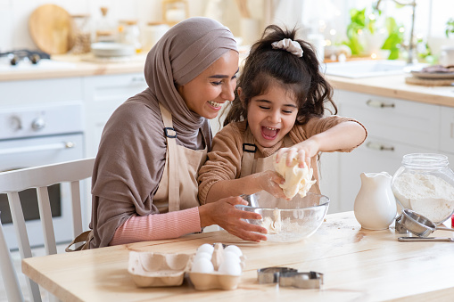
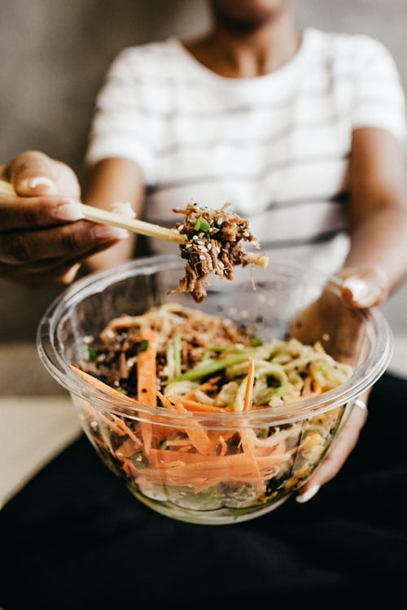
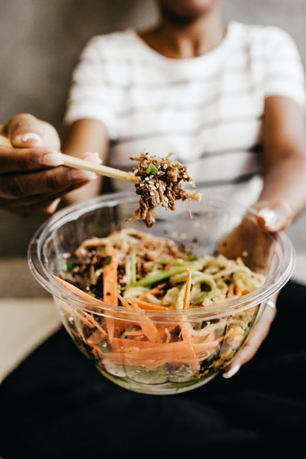

Savory. Salty. Earthy. Herby.

yummy bread
Rosemary Olive Bread
Ingredients
- 2 1/2 tsp. active dry yeast (1 package)
- 2 cups warm water (110°F)
- 1/2 cup pitted and chopped Kalamata olives
- 5 cups bread flour, plus more for dusting
- 1 cup whole wheat flour
- 1 Tbs. chopped fresh rosemary
- 2 1/2 tsp. salt
Directions:
- In a bowl, sprinkle the yeast over the warm water; let the mixture stand until bubbly, about 5 minutes.
Garlic Confit
Our friends Iman and Muhammed from Syria used to have my husband and I over once a month to teach us how to cook Syrian food. They discovered early on that Matt devoured any dish that contained garlic. They explained that in Syria, instead of the term 'sweet tooth' they say 'garlic tooth' and immediately dubbed Matt as one.
Ingredients:
- 3 heads garic, broken into cloves, peeled
- 1 cup extra-virgin olive oil
Three simple steps:
- Combine the garlic cloves and olive oil in a small saucepan over medium-low heat and bring to a gentle simmer.
- Lower the heat, likely all the way, to maintain a gentle simmer, like bubbling seltzer, for 45 minutes to 1½ hours, until the cloves are very tender and golden brown.
- Transfer to an airtight glass jar, making sure the cloves are submerged in the oil, and refrigerate for up to 2 weeks.

 
